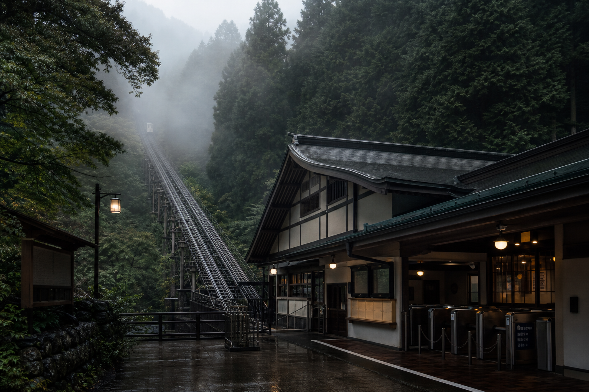

山麓駅・山上駅ともに通常案内中。

KC-01 烏野山麓
KC-02 烏野山上
山上付近に薄い霧。安全基準内。
最終便後、駅舎は閉鎖されます。
夜間に試験鳴動を行う場合があります。
INCLINE MAP
標高214mから616mへ。
烏野ケーブルは、森の斜面を直線的に登る交走式鋼索鉄道です。山麓駅の窓口、山上駅の展望台、旧観測所跡、遊歩道入口をひとつの導線として案内します。
- 01山麓駅窓口 / 駐車場 / 救護室
- 02中間信号所一般立入不可 / 保守確認点
- 03山上駅展望台 / 売店 / 旧観測所
天候、濃霧、強風、臨時便の案内。
TIMETABLE時刻表・運賃通常ダイヤと往復・片道運賃。
STATIONS駅・アクセス山麓駅、山上駅、駐車場、登山道。
MAINTENANCE安全・点検制動装置、ワイヤーロープ、放送設備。
LOSTお忘れ物山上駅の拾得物と鍵札の照会。
NOTICEお知らせ運休、点検、施設変更の履歴。
DEPARTURES
本日の発車案内
| 山麓駅発 | 山上駅発 | 案内 |
|---|---|---|
| 08:20 / 08:40 | 08:30 / 08:50 | 通常運行 |
| 09:00-16:40 | 09:10-16:50 | 20分間隔 |
| 17:00 / 17:20 | 17:10 / 17:40 | 最終時間帯 |
NOTICE